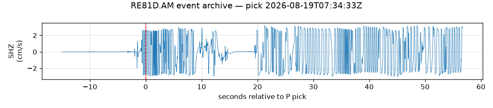

2026-08-19 SSIF Intensity-Prediction Validation — RE81D station report
SSIF 是一個實驗性的機器學習模型，用單一測站最近幾秒到幾十秒的波形， 預測震度接下來會不會超過某個等級。這個模型 2026-08-17 接上系統以來， 因為一個時間點計算的 bug，累積 1640 次觸發全部被跳過，從沒真正 預測過。這頁記錄修好那個 bug 之後，第一次真的看到模型輸出預測結果。
SSIF is an experimental ML model that predicts whether shaking intensity will exceed a given level from a single station's recent waveform. Since it was wired in on 2026-08-17, a timing bug caused all 1640 attempts to be skipped without ever producing a real prediction. This page documents the first real output after the fix.
模型每秒都會嘗試讀取那一秒的波形資料，但程式碼用「現在的系統時間」去 查詢，沒有考慮到感測器封包本身送達需要約 0.7-1 秒的延遲。而且每一秒只有 一次查詢機會，查詢時機太早、資料還沒到，那一秒就永久記錄成「無資料」。 修法是讓查詢延後 2 秒再執行，等封包確實送達再讀取。
2026-08-19 07:34:33 UTC（15:34:33 CST）人為手動搖動 RE81D 感測器本體， 製造一次夠大力、持續數十秒的真實訊號：
| 視窗 | 預測震度 | 信心 | alert 機率 | 結果 |
|---|---|---|---|---|
| EW15（15秒） | 5-級 | 91.6% | 99.96% | 預測成功 |
| EW20（20秒） | 4級 | 99.4% | 99.98% | 預測成功 |
| EW25（25秒） | 4級 | 99.7% | 99.97% | 預測成功 |
| EW30（30秒） | 4級 | 98.3% | 99.99% | 預測成功 |
| EW35（35秒） | — | — | — | 跳過（差一點） |
EW35 沒過門檻（valid_fraction 0.77，需要 0.80），可能是這次手動搖動持續
時間不夠長。Onsite（τc-Pd）那層獨立觸發，判斷一致：pd=0.8559 tc=1.527。

← 回地震事件列表 / Back to event list ・ 回即時監測首頁 / Back to live dashboard